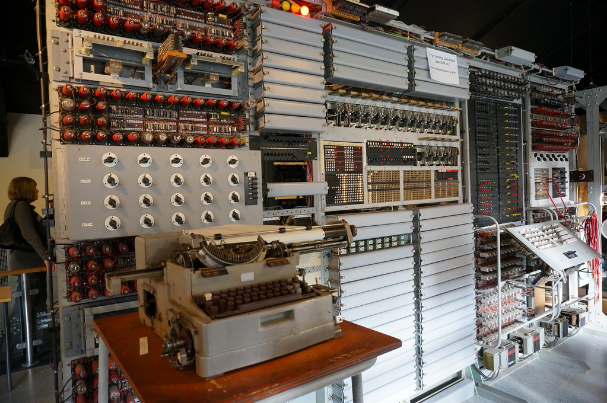

It's a really big supercomputer used in wars to see where people were coming from and to get messages and it was the very first computer ever made. plus it had a nickname.It's nickname was "tunny" and it sent messages to and from Adolph hitler. it sent it through binary code so their enemies couldn't tell what they were saying to each other and sneak up on them. there were nine of them by the end of the war so they could try to get the upper hand on their enimies.
Question Here?
Copeland, B. J. (2017, August 16). Colossus. Retrieved from https://www.britannica.com/technology/Colossus-computer.